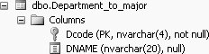

4.6. Joining More Than Two TablesYou will frequently need to perform a join in which you have to get data from more than two tables. A join is a pair-wise, binary operation. In SQL Server, you can join more than two tables in either of two ways: by using a nested JOIN, or by using a WHERE clause. Joins are always done pair-wise. 4.6.1. Joining Multiple Tables Using a Nested JOINThe simplest form of the nested JOIN is as follows: SELECT columns FROM table1 JOIN (table2 JOIN table3 ON table3.column3=table2.column2) ON table1.column1=table2.column2 Here Tables 2 and 3 are joined to form a virtual table that is then joined to Table 1 to create your result set. Note that the join in parentheses is completed first. As an example of a nested join, if we want to see the courses (course names and numbers) that have prerequisites and the departments (department names) offering those courses, we will have to join three tables--Course, Prereq, and Department_to_major, because the data that we want to display is spread among these three tables. We could choose to first join the Course table with the Prereq table, and then join that result to the Department_to_major table. The Department_to_major table contains the names of the departments. To determine which columns of the Department_to_major table can be used in the join, we have to also look at the description of the Department_to_major table, which is shown in Figure 4-5. Figure 4-5. Description of Department_to_major tableThe query to join the Course table to the Prereq table to the Department_to_major table with the Course/Prereq join done first is: SELECT c.course_name, c.course_number, d2m.dname FROM department_to_major d2m JOIN (course c JOIN prereq p ON c.course_number=p.course_number) ON c.offering_dept=d2m.dcode In the nested JOIN, the part within the parentheses, course c JOIN prereq p ON c.course_number=p.course_number, is performed first to produce a result set. The internal result is then used to join to the third table, Department_to_major. The result of the join is the following 12 rows: course_name course_number dname -------------------- ------------- -------------------- MANAGERIAL FINANCE ACCT3333 Accounting ORGANIC CHEMISTRY CHEM3001 Chemistry DATA STRUCTURES COSC3320 Computer Science DATABASE COSC3380 Computer Science DATABASE COSC3380 Computer Science ADA - INTRODUCTION COSC5234 Computer Science ENGLISH COMP II ENGL1011 English FUND. TECH. WRITING ENGL3401 English WRITING FOR NON MAJO ENGL3520 English Math Analysis MATH5501 Mathematics AMERICAN GOVERNMENT POLY2103 Political Science POLITICS OF CUBA POLY5501 Political Science (12 row(s) affected) Which join is performed first has performance implications. We could choose to do the Course/Department_to_major table join first, in which case the query could be written as follows: SELECT c.course_name, c.course_number, d.dname FROM (course c JOIN department_to_major d ON c.offering_dept = d.dcode) JOIN prereq p ON p.course_number = c.course_number For larger tables and multi-table joins, the order will determine which version of the query would be most efficient. |